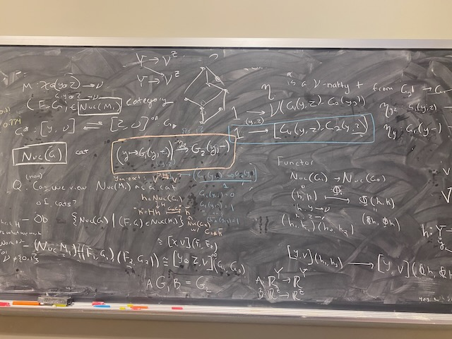
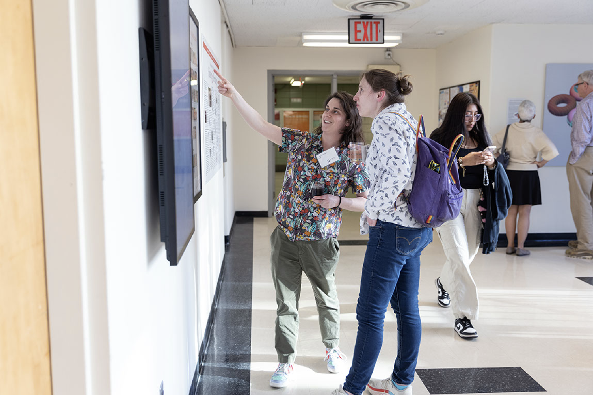
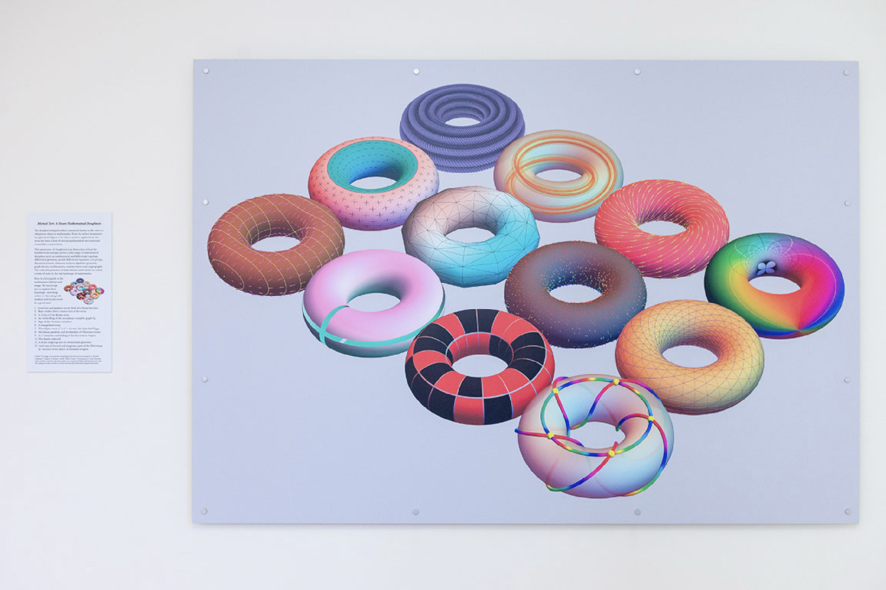
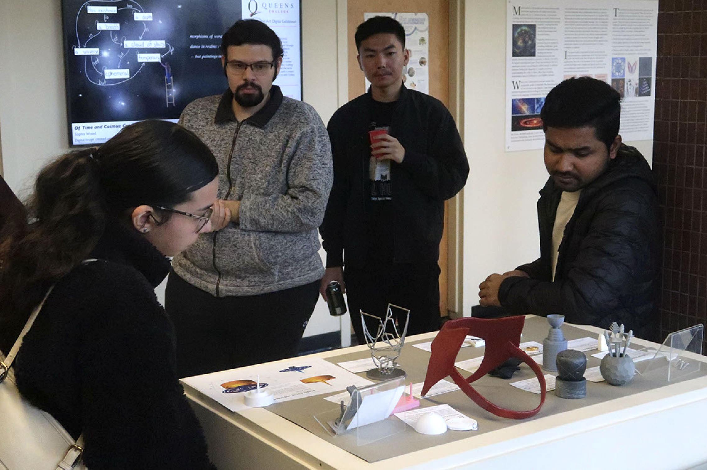
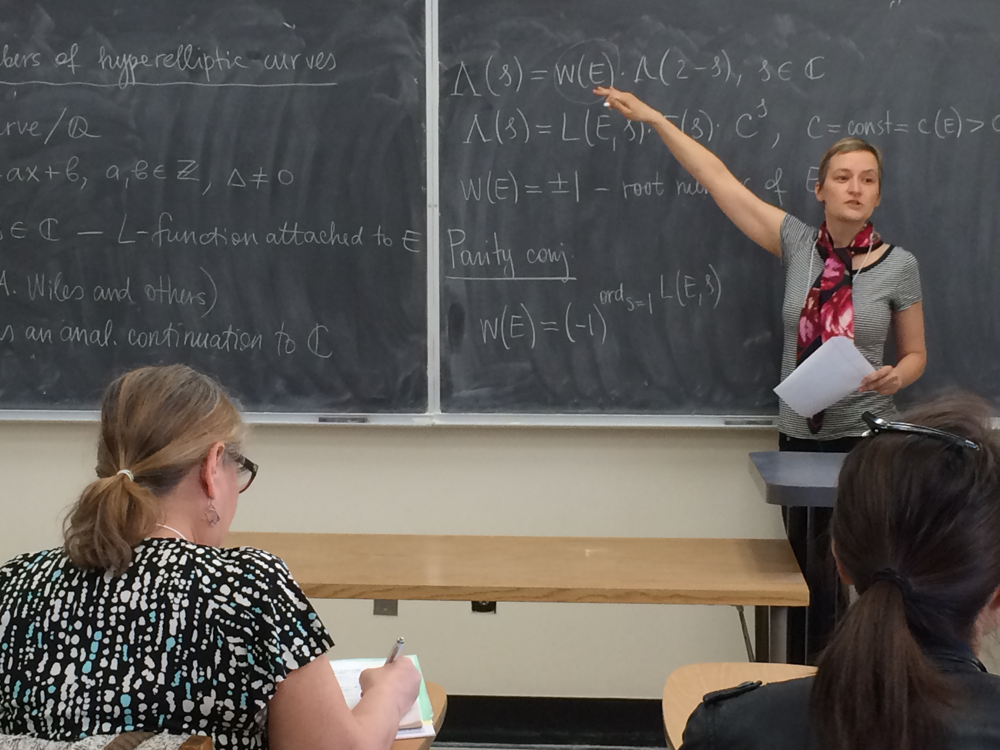
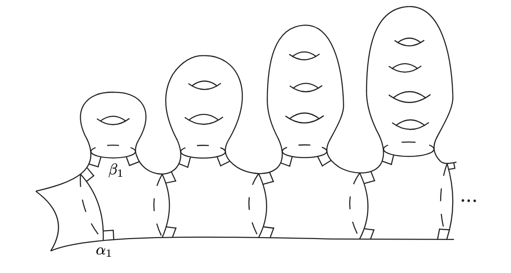

THE QUEENS MATH BULLETIN
A Letter from the Math Department, Queens College | Summer 2025

Message from the Chair
Hi everyone. I'm writing with an update on what's been happening in the Mathematics Department at Queens College.
You already know that this is a top-tier department in the greatest urban university in the world—a place where
you can get a world-class math education at a great price, where renowned faculty are making new discoveries and
sharing them with students and the broader community. But you might not know the specifics of what we’ve been up to
lately. So with this Summer 2025 edition of the Queens Math Bulletin we're going to catch you up.

In addition to the news you'll find in this newsletter, I want to share a bit of personal news.
First, let me say what a privilege it has been to serve as Chair of the department over the past two years.
I love the Queens College Math Department, and it has been a particular honor to represent so many people doing
extraordinary work—for their students, for CUNY, for the mathematical community, and for the world.
I’m truly proud of the work everyone does and proud of what we’ve accomplished together. Thank you.
I’ll be stepping down as Chair this summer to take on a new role as Executive Officer of the PhD Program in Mathematics at the CUNY Graduate Center. As some of you may know, Leo Zippin—who famously solved Hilbert’s fifth problem—was a central figure in our department and, in 1961, founded the PhD program at the Graduate Center, serving as its first Executive Officer. The connection between Queens and the Graduate Center has remained strong ever since. Many of our students have gone on to study there, and a few Queens faculty have taken on key roles in the program—notably Jozef Dodziuk who served as EO for several terms. Many of us serve on the doctoral faculty—in fact, join me in congratulating Nick Vlamis and Delaram Kahrobaei as the newest members of the department to be appointed to the doctoral faculty.
While I’ll still be a proud Queens College Math Professor, I’ll be devoting most of my time to my new responsibilities.
It’s hard to step away from Queens when there are so many exciting things happening here, but I’m honored to follow in the footsteps
of both Zippin and Dodziuk as another Queens professor to lead the PhD program.
I hope you all have a wonderful summer, and I look forward to seeing you soon!
The Kiely Hallway Project
Once an ordinary passageway outside Kiely 243, this corridor has been completely reimagined as a living gallery—a space where the elegance and history of mathematics come alive. Now, the thousands of students who walk its length each semester pass through a vibrant mathematical environment and gather beneath bright windows overlooking the Kiely courtyard to pause, reflect, and connect.




Inspired by the design ethos of MoMA and the playful spirit of MoMath, the hallway tells many stories. One section charts the epic history of mathematics, anchored by Ray and Charles Eames’s iconic *Minds of Mathematics* poster (for more about this famous piece see Daniel Ostroff on the Eames Men of Modern Mathematics IBM Timeline). Large‑scale mathematical artworks turn corners into destinations, and five bright digital displays offer vivid glimpses into the lives of influential mathematicians, student achievements, and the vast career possibilities a math degree can unlock.
On a central wall sits the Mathematical Art Digital Exhibition (MADE@QC). QR codes invite viewers to learn more about the artists and to learn more about sphere inversion, torus knots, and the many other mathematical ideas behind each piece in the rotating collection. Curated by artist, mathematician, and Queens College Professor Chris Hanusa, the exhibition drew hundreds of submissions from artists across dozens of countries.
In a nod to both past and future, two antique phone booths have been repurposed to house interactive iPad kiosks, inviting visitors to explore mathematical apps and games. With comfortable benches and charging stations, the hallway is no longer just a conduit—it’s now a destination, a space to gather and to discover.
Mathematics: a beautiful intellectual endeavor with marvelous applications.
This transformation was made possible through the generosity of our alumni and the dedication of many faculty members. We extend our deepest thanks to the alumni whose support brought this vision to life — creating an inspirating environment for our students to enjoy every day!
Research Spotlights
A Number‑Theoretic Quest Spanning Generations

The department proudly celebrates Dr. Maria Sabitova for her landmark paper A Number‑Theoretic Classification of Toroidal Solenoids published in Proc. Lond. Math. Soc. in 2024. Her single‑author, 43‑page tour‑de‑force completes a problem that has challenged mathematicians for nearly a century.
Toroidal solenoids arise in dynamical systems, and classifying their cohomology groups breaks down naturally by dimension. Vietoris and Dantzig began the one‑dimensional case in the 1920s, and Baer solved it in 1937 when he presented a complete invariant. Higher dimensions resisted every attempt—until Sabitova introduced new number‑theoretic tools in 2022 to settle the two‑dimensional case, then extended those ideas to solve the classification problem for all dimensions. Her work is a stunning example of how perseverance and innovation can unlock a seemingly intractable problem.
A Productive Sabbatical

Dr. Adam Kapelner is known for applying sharp statistical thinking in unexpected arenas—from book‑cover bias to machine‑learning analysis of depression treatments. During his recent sabbatical, he turned that same precision toward a fundamental question: *What is the ideal role of randomness in experimental design?*
At the heart of every experiment lies a tension. Randomization is meant to eliminate bias, yet pure randomness can—by chance—produce a wildly unbalanced result. Imagine a clinical trial where, just by luck, all the younger patients end up in the same treatment group.
Theorem: The pairwise‑matching design is optimal under extreme noise and extreme assignments.
Exploring that tension became the focus of Kapelner’s sabbatical year, resulting in a series of new theorems and publications. In a March 2025 paper in STAT, Kapelner (with Krieger and Azriel) defines a precise optimality criteria and rigorously proves that the best design must be less random than complete randomization, yet more random than any deterministic allocation.
These new fundamental results about randomness are of great theoretical interest and also offer scientists crucial theoretical clarity for building better experiments.
Feature: Beyond the Finite Horizon
Charting the Landscape of Big Symmetries
Symmetry is the idea by which humankind has long sought to comprehend and create order, beauty, and perfection.
—Hermann Weyl
Whether you are studying molecular bonds, the Standard Model of particle physics, or the tilings that adorn Moorish mosaics, a group action is at work behind the scenes. These actions transform spaces in ways that respect algebraic structure — and that simple, elegant concept explains many of the remarkable patterns we see in the world.
The actions of small finite groups are classical gems, beautiful and intricately structured. When the algebraic structure becomes infinite, the terrain becomes more difficult — and much remains to be discovered. Here at Queens College, we have bold researchers who are mapping the frontier.

Dr. Russell Miller works with symmetries so large and complex they are called uncomputable. A world-leader in computability theory, Miller has turned his attention to the absolute Galois Group, which consists of symmetries of the algebraic closure of the field of rational numbers — it's the ultimate symmetry group of all algebraic equations. We know the Absolute Galois Group is a huge, profinite object with a mysterious portion that is uncomputable. Miller’s NSF‑funded project Computability and the absolute Galois group of the rational numbers asks: how much of this group’s essential structure lies in the uncomputable region? His work opens a new dialogue between mathematical logic and number theory, probing the very limits of what can possibly be known.
Dr. Nicholas Vlamis pushes the study of symmetries of low-dimensional topological objects into the infinite. Since the early 20th century, mapping class groups have provided an algebraic window into the topology of small, compact surfaces. When a surface accumulates infinitely many handles or punctures — like the so-called “Loch Ness Monster” surface or the Blooming Cantor Tree Surface pictured to the right — its symmetries swell into what's called a big mapping class group, a group so large it is not even finitely generated. Backed by a major NSF award (and six consecutive PSC‑CUNY grants), Vlamis leads the field, developing the technical tools and producing foundational results that others build on. With J. Aramayona, he has written the go‑to survey for younger researchers entering this rapidly growing field.


Dr. Dragomir Šarić approaches the same infinite‑type surfaces from an analytic angle. Decidedly less algebraic, Šarić uses tools like quadratic differentials and measured foliations. In a celebrated paper Quadratic Differentials and Foliations on Infinite Riemann Surfaces published in the Duke Mathematical Journal, he provides the coordinates for “big Teichmüller spaces,” adding a foliation measure criterion for parabolicity in the infinite case, where the technical tools of Teichmüller dynamics and foliation theory are considerably more delicate.
From the algebraic symmetries of equations to the mapping class groups of infinite-type surfaces in topology, our faculty are leading the study beyond the classical horizon, revealing new phenomena and discovering entirely new mathematics.
A New Classic in Complex Analysis

Dr. Saeed Zakeri has authored a modern classic: A Course in Complex Analysis, published by Princeton University Press. Already adopted in PhD programs around the world, the book stands out for its geometric insight, elegant exposition, and broad scope—covering topics from Möbius transformations and conformal metrics to the uniformization theorem.
Designed for graduate-level study, the book offers a seamless blend of analysis and geometry, with over 350 thoughtfully constructed exercises and clear historical framing. According to the MAA Review, Zakeri’s style “sets this book apart” from more conventional texts, making it ideal both for classroom teaching and independent exploration.
Beautifully produced, beautifully written, on an incomparably beautiful area of mathematics, this is an inspirational book that I shall gratefully return to again and again.
—Nick Lord, Mathematical Gazette
A vibrant new voice in the graduate mathematics textbook landscape, Zakeri’s book is already reshaping how complex analysis is understood and taught.
Critical Math: a new model for collaborations
The Math Department is proud to be a sponsor of Critical Math — an experimental, human-scale mathematical retreat cofounded by Queens College's own Dr. Scott Wilson. The inaugural gathering, taking place this summer in Germany’s Black Forest, brings together a small, interdisciplinary group of mathematicians and mathematically curious thinkers for a week of cycling, conversation, and collaborative reflection centered on the theme: Cohomological and homotopical methods in complex geometry.

Critical Math is no ordinary conference. Academic sessions are held in 2–3 hour blocks, where invited speakers discuss open problems that they think the audience might be able to help solve. Each session encourages deep engagement, with speakers having enough time to provide background and detailed descriptions of challenges.
Between sessions, participants share meals and take to the road, cycling through the scenic valleys of the Black Forest. Their route includes stops at renowned mathematical institutions such as the famous Oberwolfach Research Institute.
By incorporating cycling into the very structure of the event, we aim to highlight how the same good practices that help keep the planet healthy also enhance our intellectual and physical well-being"
Math is, after all, a collective and social practice. Critical Math invites us to reconsider how we come together to share in its experience. We wish them a joyful and inspiring event — and hope it will be the first of many!
Alumni Spotlights
The Record Breaker

Dr. Zev Klagsbrun ’06—in collaboration with Dr. Noam Elkies of Harvard—has broken an 18-year record by unveiling an elliptic curve with rank 29, the highest ever discovered.
Read more in Quanta Magazine
.
Elliptic curves are foundational to number theory and modern cryptography. While most have rank 0 or 1, rare outliers like this one exhibit strikingly complex rational point structures.
It remains an open question whether curves of arbitrarily high rank exist—and the Elkies–Klagsbrun result pushes the boundaries of what is known.
We proudly congratulate Dr. Klagsbrun on this extraordinary achievement.
The Inaugural Laureate

From left to right: Azita Mayeli, Dragomir Šarić, Mike Pandazis, Christian Wolf, Ravi Kulkarni
From Queens College undergraduate to PhD student to first‑ever recipient of the Ravindra S. Kulkarni Award for Best Thesis,
Dr. Michael Pandazis ’19 has charted an exceptional path.
His dissertation, supervised by Dr. Šarić, marks a significant contribution to the field. After years as a valued adjunct at QC, Mike joins the fulltime math faculty at CUNY’s John Jay College this Fall.
Mike's PhD thesis opens a new chapter in the dynamics of infinite surfaces.
—Christian Wolf, Executive Officer of the PhD program
Celebrating Our Students
Class of 2025 — Honors in Mathematics
Ashir Ahmed · Sulaiman Alam · Kevin Bedoya · Jonah Bierig · Erica Bonheur · George Charalambous · Rongdao Chen · Ezra Cinamon · Dominika Dotlacilova · Safiyah Gafar · Abigail Kogan · Fanfang Lyu · Shana Mandelbaum · Adityo Mamun · Paidi Mathers · Ben Pulatov · Allen Singleton · Uri Spiro · Lukas Tarrao · Jacob Tennenbaum · Ariana Verbanac · Natasha Watson · Tao Wu · Yuanhong Yu
2025 Departmental Awards & Scholarships

- George Charalambous — Claire and Samuel Jacobs Award
- Rongdao Chen — Banesh Hoffmann Memorial Award
- Safiyah Gafar — Sandbox AQ Award
- Jonathan Halabi — Dr. R. S. Kulkarni Mathematics Award (Number Theory / Algebra, Graduate)
- Taqiya Hussain — Dr. R. S. Kulkarni Mathematics Award (Topology / Geometry, Graduate)
- Adityo Mamun — Eva and Jacob Paulson Memorial Award
- Paidi Mathers — S. and D. Kulkarni Award (Differential Geometry)
- Allen Singleton — Thomas A. Budne Memorial Award
- Lukas Tarrao — Samuel Jacobs Award
- Jacob Tennenbaum — Fugosich Scholarship
- Ariana Verbanac —
Mrs. Neela Kulkarni Prize · Joseph Hershenov Prize · S. and D. Kulkarni Award (Complex Analysis) · Nick Metas Award · Dr. R. S. Kulkarni Award (Topology / Geometry, Undergraduate)
- Anthony Wright — Dr. R. S. Kulkarni Award (Number Theory / Algebra, Undergraduate)
- Tao Wu — Arthur Sard Memorial Award · Sandbox AQ Award
Special congratulations to Rongdao Chen, Adityo Mamun, and Ariana Verbanac who will be entering PhD programs in math in Fall 2025!
Faculty Awards
The Simons Foundation — Yunping Jiang · Krzysztof Klosin · Russell Miller · Dragomir Šarić · John Terilla · Nick Vlamis · Scott Wilson
National Science Foundation — Russell Miller · Alexey Ovchinnikov · Nicholas Vlamis
Office of Naval Research — Delaram Kahrobaei
Queens College Divisional Teaching Award — Adam Kapelner
CUNY Research Incentive Awards — Moshe Adrian · Adam Kapelner (with William Blanford in Env. Sci.)
PSC-CUNY — Moshe Adrian · Krzysztof Klosin · Dan Lee · Russell Miller · Dragomir Šarić · Nick Vlamis · Scott Wilson
The Mathematical Discovery Series

For the past three years, our Discoveries in Math Lecture Series has brought world-renowned mathematicians to campus to speak directly with undergraduates about some of the most important discoveries in modern mathematics. The first two speakers were
Yitang Zhang of Twin Prime Conjecture fame in 2022 and
John Hubbard, a pioneer of complex dynamics, in 2023.
This academic year,
Akshay Venkatesh, a 2018 Fields Medalist, spoke about whether AI will solve all of mathematics.
The series remains a highlight of the fall semester, drawing standing room crowds to our largest lecture halls.
Special thanks to Kris Klosin for organizing this exceptional series — and thank you, Akshay, for the lively mathematical conversations over lunch at the Temple Canteen. Our students won’t forget it!
The Queens College Mathematics Competition

In May 2025, we were thrilled to bring back the Annual Mathematics Competition for High School Students — a full-day event featuring breakfast, lunch, and several spirited rounds of problem solving. The day was a resounding success.
Queens College welcomed 60 students from 9 different high schools. Between rounds, the room buzzed with energy as students enthusiastically discussed the challenges they had just tackled.
We extend our heartfelt thanks to Elliot Gangaram, who led the organization of the event, and to the many members of the Queens College math community whose efforts made the day possible — from our Math Lab tutors (Sachin Fonseka), adjunct faculty (Bryan Nevarez, RuiPeng Xu, Kermit Sahney), lecturers (David Miller, Joh Dharma, Seth Lehman), and professor (Chris Hanusa), to our exceptional administrative assistant, Tony Wen.
Our Alumni
Our alumni translate mathematical training into impactful careers across academia, finance, data science, and technology. From Namisha Singh ’24 (Data Analyst, The New York Times) and Todd Gaugler ’13 (Quant, Point72) to Rebecca Horowitz ’20 (AI Software Engineer, JPMorgan Chase), their work shows what is possible with a strong mathematical foundation.
Another successful career panel
Connect with me on LinkedIn anytime!
Our alumni are always happy to support our graduates. This year’s third annual Careers in Math panel featured QC alumni Rebecca Schley, Lead Litigation Project Manager at Seyfarth Shaw LLP; Sara Cinamon, Data Privacy Scientist at HealthVerity; and Todd Gaugler, Quant Developer at Point72.
Thank you to Rebecca, Sara, and Todd for sharing their career journeys, interview tips, and resume advice — and to Michael Joseph and Elliot Gangaram for organizing another excellent event!
Stay Connected